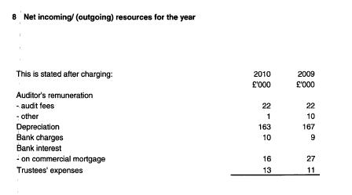
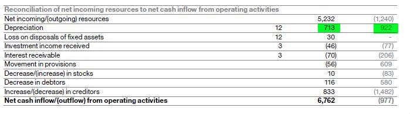
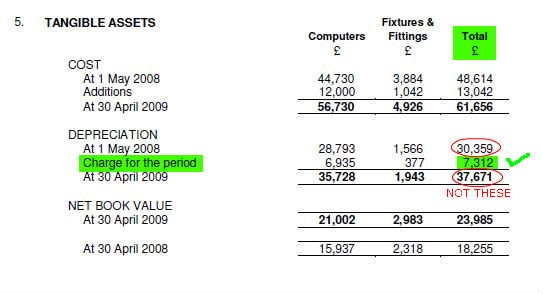
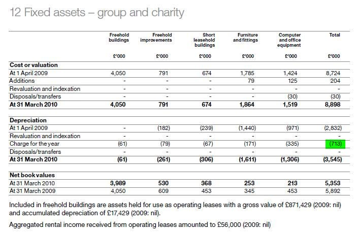

Depreciation#
We want to capture the annual depreciation charge for each account. This only applies to SORP-type accounts. The depreciation figure can appear in several places in the accounts. It will be in the notes to the accounts. The easiest way to find it is to search for the "depreciation" in an OCR'd PDF.
For some accounts the figure may be presented as a negative number, with a minus sign, or in brackets. For Consistency, you should enter all depreciation of fixed assets as a positive number in the data entry form.
One of the sections (which should be present in all SORP accounts) will either be called:
- Analysis of Movement of Fixed Assets
- Tangible / Fixed assets
Ideally the figure will be the same in each instance. However in the "Analysis of movement of fixed assets" only last year's figure is likely to be included - in the other two instances both the current and prior year should be available in the sections called:
- Net incoming / outgoing resources for the year
- Net incoming resources
It may also be present in a section called:
- Reconciliation of cash flow
- Cash flow statement
or some combination of the above.
In the example below from the NCVO accounts, you would enter "163" in current year, and "167" in the past year.

And from Shelter:

Tangible or Fixed Assets#
Take care when entering this total from the balance sheet. It is important that it is the annual charge that is entered, rather than the accumulated total of depreciation. This may be labelled "Charge for the period", "Charge for the year" or similar.

Where Depreciation is broken down by asset class, as below, we do not need the depreciation for each level - just the annual total.

From SORP:#
"Most tangible fixed assets depreciate; that is they wear out, are consumed or otherwise suffer a reduction in their useful life through use, the passing of time or obsolescence. Their value is thus gradually expended over their useful economic life. This expenditure should be recognised by means of an annual depreciation charge in the Statement of Financial Activities and shown in the balance sheet as accumulated depreciation deducted from the value of the relevant fixed assets"